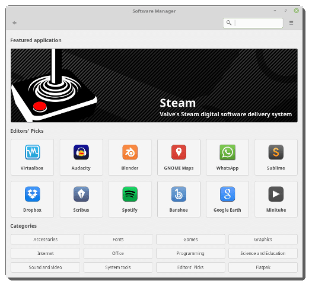

A Nova versão do Linux Mint Inclue: - Flatpak e pacotes Deb na loja, inclusive o Whatsapp, veja:

Agora com alguns Flatpaks
Além disso, vem com o novo timeshift a "maquina do tempo" de recursos, veja
Da para voltar versões
Futuramente irei testar isso Além disso, vem o Cinnamon 3.6, icones da barra de janelas, ficam com loading. Quer Saber mais sobre o Linux Mint (18.3) ? Vá até esse site. Até mais.